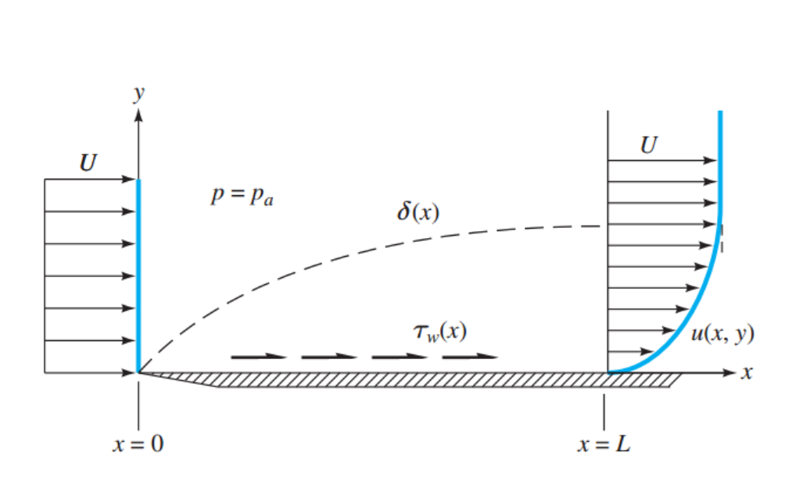
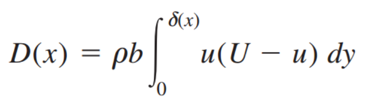
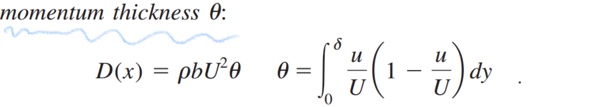
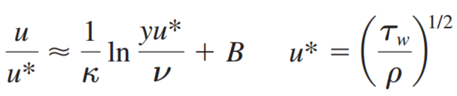
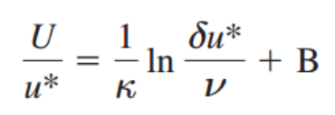
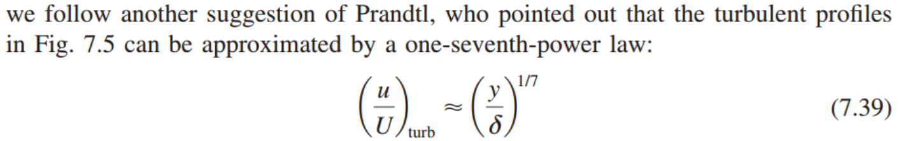
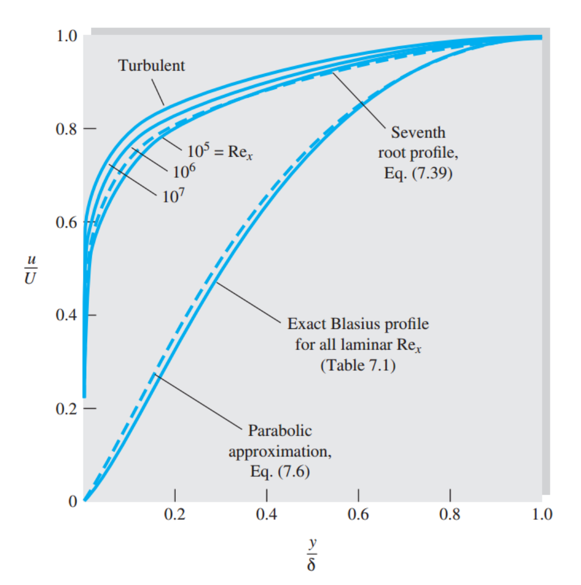

이전 포스터에서는 Navier's stokes equation 즉, differential equation을 통해서,
Boundary layer, laminar flow를 해석했다면,
이제 Integral method를 사용해보자.
그림과 같이, Flate plate Boundary layer가 존재한다고 가정하자.

Reynolds transport Theorem,과 Continuity Eq을 통해서 Drag force는 다음과 같이 표현 된다.
![[Fluid Mechanics] Ch 7. Boundary layer Equation- Momentum Integral Relation](./images/img-002.jpg)
![[Fluid Mechanics] Ch 7. Boundary layer Equation- Momentum Integral Relation](./images/img-003.jpg)
따라서, 길이가 X인 평판위를 지나면, Drag force는 다음과 같다.

이때 뒤에, integral 부분을 U^2으로 나눈 것을 Theta로 치환해주면 다음 식과 같이 표현 할 수 있다.

'
한편, 우리는 Drag force를 표현했었고, Flate plate는 결국
Drag force는 shear stress를 x축 방향으로 적분한것과 동일 할 것이다.
![[Fluid Mechanics] Ch 7. Boundary layer Equation- Momentum Integral Relation](./images/img-006.png)
따라서, Drag force를 두개의 서로다른 term으로 유도했으므로 연립해주어,
최종적으로 Karman 수학,유체역학자는 Momentum Integral relation 식을 다음과 같이 유도하였다.
![[Fluid Mechanics] Ch 7. Boundary layer Equation- Momentum Integral Relation](./images/img-007.png)
핵심은 laminar이든, turbulent이든 상관없이 적용 된다는 것이다.
Dimensionless 마찰력과 같은, Friction coefficient는 다음과 같이 정의되므로,
![[Fluid Mechanics] Ch 7. Boundary layer Equation- Momentum Integral Relation](./images/img-008.png)
위의 Theta를 대입하면
![[Fluid Mechanics] Ch 7. Boundary layer Equation- Momentum Integral Relation](./images/img-009.png)
한편, ch6에서 Turbulent flow가 벽면을 흐르는 경우,
벽의 점성의 영향이 가장크고, 벽과 가장 가까운 Viscous sublayer
그리고 벽의 점성을 거의 받지 않고, 난류의 영향이 지배적인, Turbulent outer layer
로 구성되어있다고 배웠다. (자세한 내용 밑의 ch6 post)
그리고, 그 두 layer 각각 dimensionless 함수 u+,y+로 표현하였고
두 layer의 함수가 불연속적이므로 그 중간을 연속적으로 이어주는
Overlap layer은 log함수 형태로 다음과 같이 표현되었다.

https://jeffdissel.tistory.com/39
[Fluid mechanics] Ch 6. Law of the wall.
난류 Turbulence는 Randomness그 자체이다. 시간에 따라서 진폭이 일정하지 않는 그냥 랜덤한 파동의 형태를 띈다. 이를 분석하기 위해서, 과학자들은 시간평균의 개념을 가져온다. 그리고 Time mean veloc
jeffdissel.tistory.com
자 갑자기 왜 ch6 Internal flow를 언급했나??
그 이유는 flat plate를 지나는 난류의 경우, overlap layer에 있는 난류와
동일하다고 가정하고 풀 것이기 때문이다.
따라서, Boundary layer thickness 를 구하기 위해,
y=
δ
, u= U를 대입해주면,

여기서 변수들을 Friction coefficient, cf 로 바꾸어 대입해주면
![[Fluid Mechanics] Ch 7. Boundary layer Equation- Momentum Integral Relation](./images/img-012.jpg)
![[Fluid Mechanics] Ch 7. Boundary layer Equation- Momentum Integral Relation](./images/img-013.png)
위 복잡한 식을 전부 plot한 후, Power-law approximation을 하면 더 간단하게 다음과 같이 식을 변형시킬 수 있다.
(by Prandtl)
![[Fluid Mechanics] Ch 7. Boundary layer Equation- Momentum Integral Relation](./images/img-014.png)
우리는 delta와 x의 관계식을 구하고자 한다. 따라서,
방금구한 Cf를
momentum thickness 식에 대입해준다.
그리고, d
θ/dx 를 구하기 위해, θ의 정의를 다시 살펴보면 u/U가 필요함 을 알 수있다.
여기서 또 approximation이 들어간다.
물론, 실험 data를 근거로 하는 가정 + Prandtl 이라는 네임값도 한몫하지 않았을까 싶다.
아무튼 Prandtl은 다음과같이, u/U를 정의하였다.

이제 Momentum thickness적분 term에 대입후 적분해주면.
![[Fluid Mechanics] Ch 7. Boundary layer Equation- Momentum Integral Relation](./images/img-016.png)
따라서, 최종적으로 밑의 식에 대입해주면
![[Fluid Mechanics] Ch 7. Boundary layer Equation- Momentum Integral Relation](./images/img-017.png)
최종적으로, Boundary layer thickness 식은 다음과 같이 도출된다.
![[Fluid Mechanics] Ch 7. Boundary layer Equation- Momentum Integral Relation](./images/img-018.jpg)
이전 포스터에서 구한 Balsisus- laminr eq까지 표현한 그래프를 살펴보면

Turbulent는 y가 조금만 증가해도, u가 U에 근접해지는 것을 알 수 있다.
즉즉즉
boundary layer thickness가 laminar보다 작다는 것을 수학식으로 확인하였다.